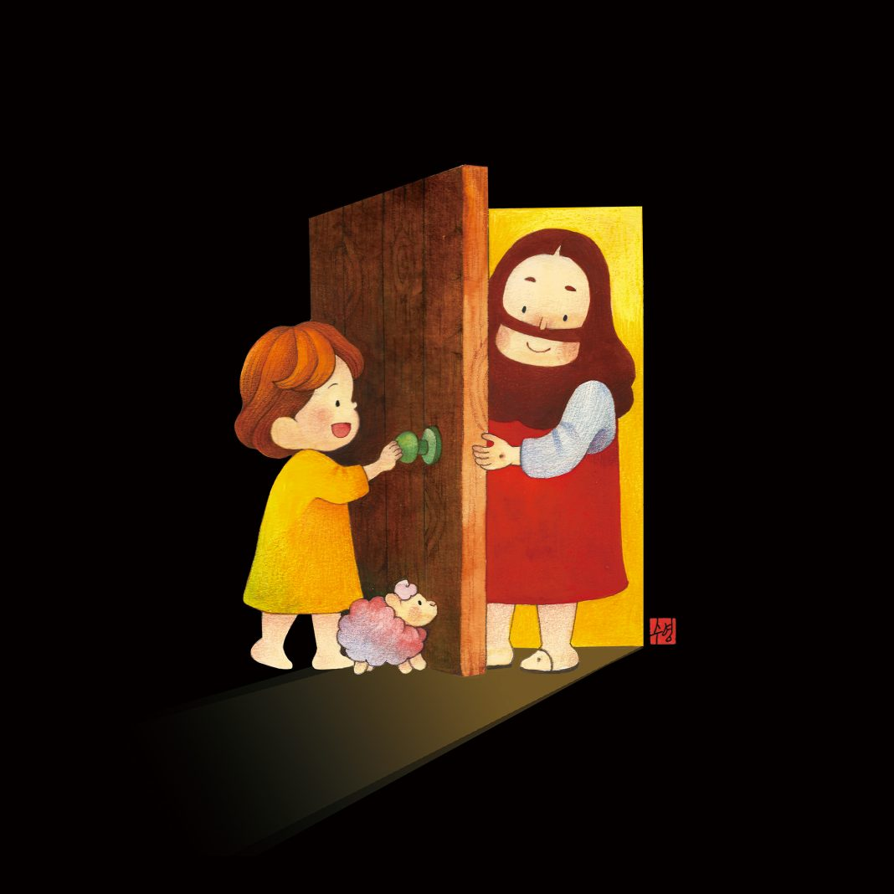
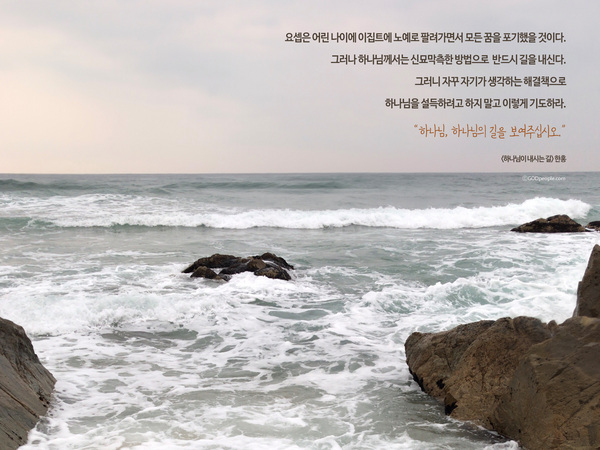

왜 나를 깊은 어둠속에
홀로 두시는지
어두운 밤은 왜 그리 길었는지
나를 고독하게 나를 낮아지게
세상 어디도 기댈 곳이 없게 하셨네
광야 광야에 서 있네
주님만 내 도움이 되시고
주님만 내 빛이 되시는
주님만 내 친구 되시는 광야
주님 손 놓고는 단 하루도 살 수 없는 곳
광야 광야에 서 있네
주께서 나를 사용하시려
나를 더 정결케 하시려
나를 택하여 보내신 그곳 광야
성령이 내 영을 다시 태어나게 하는 곳
광야 광야에 서 있네
내 자아가 산산히 깨지고
높아지려 했던 내 꿈도
주님 앞에 내려놓고
오직 주님 뜻만 이루어지기를
나를 통해 주님만 드러나시기를
광야를 지나며


출처:갓피플(godpeople.com)